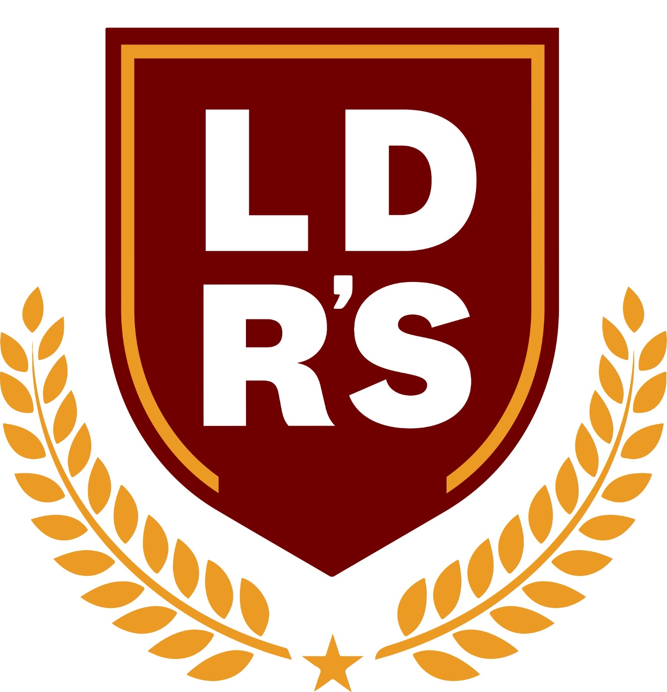
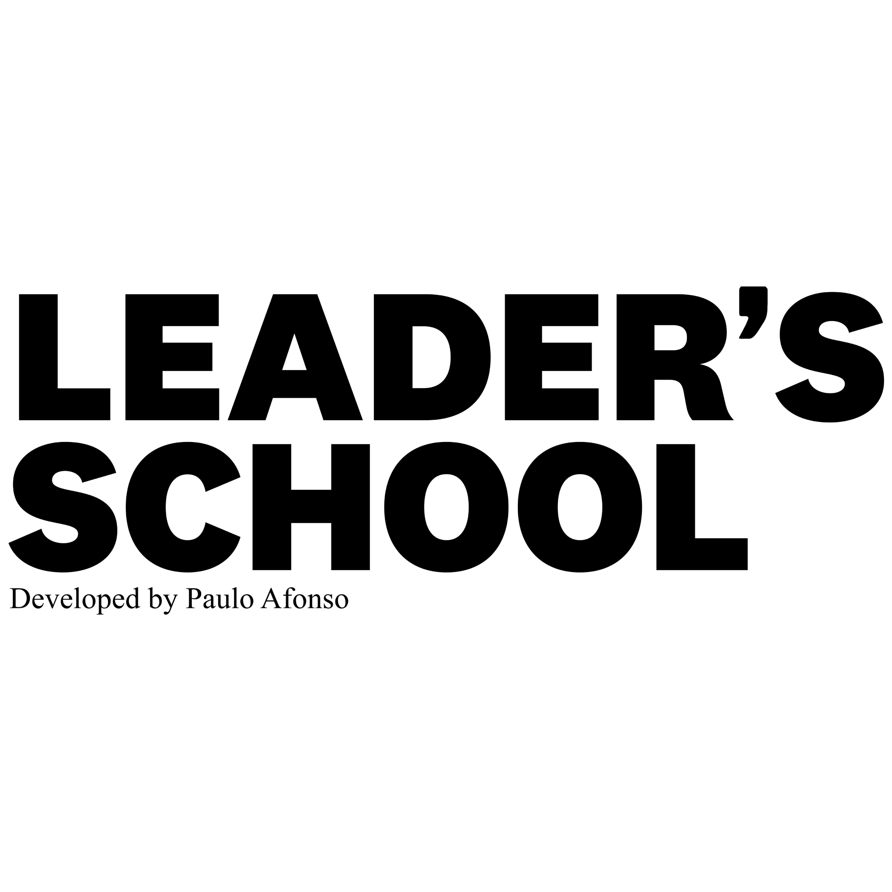

Descubra seu Perfil de Palestrante
Um diagnóstico rápido para você comunicar com mais clareza, impacto e verdade.
Iniciar diagnóstico
1
/4

Voltar
Próximo
Analisando suas respostas…
Os 5 tipos de palestrante
Estrategista (A)
: estruturado, objetivo, conduz com clareza de plano.
Inspirador (B)
: emocional, envolvente, move pessoas pela energia.
Professor (C)
: didático, explica por etapas, facilita compreensão.
Improvisador (D)
: espontâneo, carismático, cria conexão no momento.
Analítico (E)
: lógico, orientado a dados, constrói credibilidade racional.
Os 5 tipos de discurso
Estratégico
: foco em caminho, prioridades e próximos passos.
Inspiracional
: foco em propósito, coragem e visão de futuro.
Didático
: foco em clareza progressiva, exemplos e síntese.
Carismático
: foco em presença, humor, histórias do momento.
Analítico
: foco em evidências, método e tomada de decisão.
Espelho de Reflexão Pessoal — anote na sua apostila
Perfil predominante (letra + título): ______
Me identifiquei porque: ______
Que tipo de palestrante sou hoje? ______
Que tipo de discurso uso hoje? ______
Em qual tipo quero evoluir? ______
Como minha personalidade aparece no palco? ______
Próximo passo revelado pelo diagnóstico: ______
Refazer diagnóstico